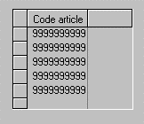

Insertion d'un objet tableau
Pour insérer un objet tableau dans une page Xwin, cliquez sur le bouton  .
.
Placez l'objet tableau à l'endroit désiré. Il apparaît alors sous la forme d'un cadre vide. Vous pouvez adapter sa taille en sélectionnant le tableau (clic simple) et en utilisant les poignées.
Seules deux propriétés doivent être obligatoirement saisies : le nom du tableau et le point d'arrêt associé.
Insertion d'une colonne
Pour insérer une colonne, procédez comme pour l'insertion d'une donnée normale (objet champ, multi-choix, case à cocher, bitmap variable, arbre, graphique) mais déposez l'objet à l'intérieur du tableau. Il est alors automatiquement intégré au tableau sous forme de colonne. Par exemple :

Le nombre de colonnes d'un tableau n'est pas limité par la taille de l'objet. Si nécessaire, un ascenseur apparaît pour permettre le défilement horizontal des colonnes.
Attention : Si vous déposez simplement l'objet dans la zone délimitée par le tableau, l'objet sera placé en dernière colonne. Pour placer l'objet avant une colonne donnée, déposez l'objet sur cette colonne tout en gardant la touche Ctrl enfoncée.
Insertion depuis le dictionnaire (bouton  )
)
Avec ce type d'insertion, vous devez au préalable sélectionner l'objet tableau (dans le cas contraire, les objets ne pourront être insérés que dans la page).
Attention : Si vous sélectionnez le tableau proprement dit, les objets insérés seront placés en dernière colonne. Si vous sélectionnez une colonne du tableau, les objets insérés seront placés avant la colonne sélectionnée.
Remarque : ce mode opératoire est identique en cas de coller d'objets dans le tableau.
Convertir un champ existant en colonne de tableau
Vous pouvez également intégrer dans le tableau un objet (du bon type) qui se trouve dans la page en cours. Sélectionnez l'objet et déplacez-le à l'intérieur du tableau, comme décrit au paragraphe Insertion d'une colonne.
Convertir plusieurs champs existants en colonne de tableau
Vous pouvez également utiliser la commande "Coller" pour intégrer dans le tableau une sélection d'objets (cette fonctionnalité est particulièrement intéressante pour dupliquer dans un tableau le mode fiche d'un zoom). Procédez alors comme décrit au paragraphe Insertion depuis le dictionnaire avant d'exécuter la commande Coller. Vous pouvez aussi cliquer droit sur une colonne du tableau et sélectionner le choix "Coller avant" ou "Coller après" du menu contextuel.
Remarque : les groupes de radio-boutons collés sont automatiquement convertis en multi-choix.